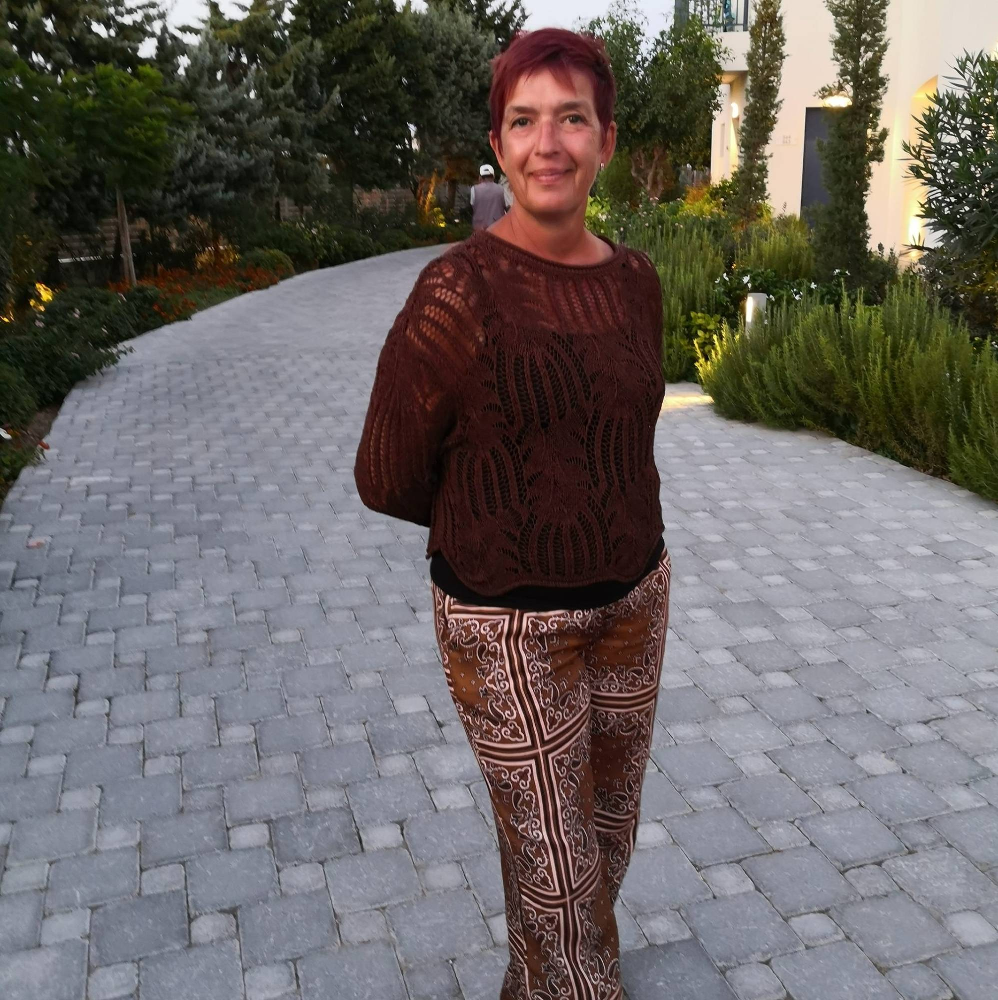

Retrouvez votre
équilibre naturel
Accompagnement personnalisé corps & esprit pour réactiver vos potentiels et révéler votre plein épanouissement.
Qu'est-ce que la kinésiologie ?
La kinésiologie est une approche respectueuse de la personne dans toutes ses dimensions physique, émotionnelle, mentale et énergétique.
C'est un ensemble de pratiques qui nous aide à réactiver nos potentiels. Elle part du principe que notre corps garde en mémoire tout notre vécu, jusqu'au plus profond de nos cellules. Toute situation vécue qui exige que nous changions ou nous adaptions génère une réponse physiologique du corps qui échappe à notre conscience.
La kinésiologie ne cherche pas à diagnostiquer ni à traiter des maladies. Elle nous aide à lever les blocages pour que le corps retrouve son équilibre naturel et sa capacité d'auto-régulation.
Le test musculaire
Outil de dialogue avec le corps, indolore, il fonctionne de manière binaire à l'image d'un ordinateur. Il permet de déterminer la technique appropriée, d'identifier le stress et de guider les corrections tout au long de la séance.
Une mémoire cellulaire
Notre corps enregistre chaque expérience vécue. La kinésiologie accède à cette mémoire pour identifier ce qui bloque notre élan et libérer ce qui doit l'être, en douceur et en profondeur.
Réactiver vos potentiels
La kinésiologie est un puissant allié à la médecine allopathique et aux autres disciplines. Elle nous aide à retrouver l'équilibre et à révéler les ressources qui sommeillent en chacun de nous.
À qui s'adresse la kinésiologie ?
La kinésiologie accompagne chaque personne, quel que soit son âge, dans les moments de vie qui demandent un soutien.
Bébés
Pour les enfants de moins de 3 ans, la séance se fait en transfert : après une équilibration du parent, les besoins de l'enfant sont testés via le muscle indicateur du parent. Il est conseillé de venir avec quelques jouets non bruyants et un second adulte.
- Problèmes de sommeil
- Pleurs inexpliqués
- Inconfort général
- Entrée à la crèche
- Changement de situation familiale
- Déménagement
Enfants & Ados
Des séances adaptées pour aider votre enfant à être plus confiant, serein, moins angoissé dans chaque situation d'inconfort.
- Peurs et colères
- Difficultés à s'intégrer dans un groupe
- Énurésie, encoprésie
- Difficultés de concentration
- Dyscalculie, dyslexie
- Allergies
- Anxiété scolaire
- Changements familiaux, déménagement
Adultes
La kinésiologie accompagne toutes les étapes de la vie adulte, les transitions, les préparations et les défis du quotidien.
- Manque de confiance en soi
- Préparation à un événement (permis, entretien…)
- Difficultés à faire des choix
- Peurs, phobies, prise de parole en public
- Travail sur les croyances limitantes
- Deuil, fin de quelque chose
- Douleurs persistantes, migraines, posture
- Difficultés à concevoir, grossesse, accouchement
- Annonce d'un diagnostic
- Non-acceptation de son corps, poids, changements corporels
- Stress, anxiété, burn-out
Comment se déroule une séance ?
Écoute & dialogue
Un temps d'écoute bienveillante pour cerner les raisons de votre demande et déterminer l'objectif prioritaire de la séance.
Prétests
Quelques prétests nécessaires, toujours par le biais du muscle indicateur, pour que la séance soit optimale dès le départ.
Équilibration
La technique la plus appropriée est choisie et les corrections nécessaires sont effectuées tout au long de la séance.
Intégration
Un temps de retour et d'échange pour ancrer les bénéfices de la séance dans votre quotidien.
Soins au tambour Unité
Des soins vibratoires sous l'égide de Lany Côté et Jacques Nadon. Le tambour Unité, par sa grande taille, permet de recouvrir le corps de vibrations réparties uniformément au cœur de chaque cellule.
Quelques minutes de vibrations suffisent pour vous transporter dans un état modifié de conscience un état de méditation et de relaxation profonde. Ces fréquences vibratoires amènent l'harmonisation et la reconnection à votre vibration d'origine.
Quand tout est en place dans le corps et l'esprit, l'énergie circule librement et permet à chaque cellule, chaque organe, de fonctionner pleinement. Ces soins permettent de :
« Le tambour trouvera la juste façon de vous toucher et de vous transmettre ce dont votre âme a besoin au moment où elle en a besoin. »
Les soins vibratoires
Équilibration des 7 chakras
Ce soin apporte la paix et le calme, et libère ce qui doit l'être dans chacun des centres énergétiques. La personne est harmonisée, unifiée sur une même fréquence d'unité afin de se sentir plus complète et plus proche de son essence véritable.
Fusion des polarités
Cette séance enclenche un processus de réunification et de retour à l'équilibre entre le féminin et le masculin. Trop dans le féminin, on se repose sans passer à l'action. Trop dans le masculin, on agit sans jamais se poser. Ce soin invite à retrouver l'harmonie entre les deux.
Soin de renaissance
Pour qui vit une transition, un deuil, un changement de situation ou souhaite se libérer d'une situation qui l'encombre. Ce soin aide à reprendre du pouvoir sur soi-même et sur sa vie.
Le voyage chamanique · 5 soins
Ces cinq soins peuvent être réalisés dans l'ordre ou séparément, selon vos besoins.
L'Aigle
Pour qui se sent prisonnier de ses peurs ou face à une situation inextricable. L'Aigle apporte une vision plus haute et plus claire, une grande énergie de propulsion. Il déclenche le mouvement et l'action dans une période de renouveau ou suite à une stagnation. Il montre qu'il existe plusieurs possibilités.
Le Coyote
Pour qui désire transformer ses blocages conscients ou inconscients liés au passé. Le Coyote nous invite à ne pas prendre la vie trop au sérieux. Il nous reconnecte à notre enfant intérieur, à l'innocence, la joie, le lâcher-prise. Il libère les peurs, sort des illusions et remet de la créativité dans notre vie.
L'Ours
Pour qui vit une période de transition, d'accomplissement ou de fin de cycle. L'Ours invite à s'arrêter, reconnaître son chemin, ralentir et écouter son intuition. Il réapprend à se respecter dans son rythme, à s'aimer et à se soutenir. Il aide à retourner à l'essentiel et à la simplicité du vivant.
 🦬
🦬
Le Bison
Pour qui veut reconnaître sa mission de vie et clarifier son rôle dans le monde. Le Bison aide à faire confiance à son intuition et à choisir avec courage. Il guérit les blessures de séparation, donne le sentiment d'être soutenu par la communauté visible ou invisible. Il apporte courage, stabilité et guidance dans les moments difficiles.
Le Cœur
Pour qui a besoin de faire le vide, de retrouver l'harmonie intérieure et extérieure, et de se connecter à sa force intérieure. Le soin du Cœur invite à la paix profonde et à l'unité avec soi-même.

de pratique
Je suis
Katelyne Vonck
Infirmière depuis de nombreuses années, je me suis orientée vers la kinésiologie il y a une dizaine d'années, avec la volonté d'élargir mon horizon et d'apporter mon aide au plus grand nombre. J'ai vite réalisé que la kinésiologie pouvait être un puissant allié à la médecine allopathique et aux autres disciplines.
Formée à l'IBK pour un cursus de plus de 900 heures, j'ai continué à me former et continue encore aujourd'hui. J'ai notamment complété ma pratique par les réflexes archaïques (Daphne Discart), la kinésiologie périnatale depuis plus de 8 ans (formée par Elisabeth Wolf) et la méthode JMV.
Je me suis également formée aux soins chamaniques vibratoires au tambour Unité, sous l'égide de Lany Côté et Jacques Nadon une approche qui me permet de vous accompagner dans un tout autre registre, profond et lumineux.
- Approche holistique corps-esprit
- Accompagnement bienveillant et confidentiel
- Formation continue, +900h de cursus certifié
- Complémentaire à la médecine allopathique
Techniques de kinésiologie utilisées
La méthode JMV
Une méthode énergétique qui regroupe plusieurs techniques mouvements oculaires, stimulation de points d'acupuncture et travail neuro-musculaire pour rechercher l'origine d'un déséquilibre et accompagner le corps vers sa capacité naturelle d'auto-régulation.
La méthode JMV vise à identifier les causes d'un inconfort physique, mental ou émotionnel, puis à lever les perturbations qui l'entretiennent pour permettre à l'organisme de retrouver son équilibre.
Elle s'intéresse notamment aux intolérances alimentaires, aux émotions refoulées et aux perturbations internes ou externes qui peuvent être à l'origine de nombreux déséquilibres et inconforts du quotidien.
Le travail se fait en douceur, sans manipulation forcée, dans le respect du rythme de chacun.
Identifier l'origine
Nous cherchons d'abord à définir l'origine de chaque déséquilibre intolérance, mauvaise assimilation, blocage énergétique afin de comprendre ce qui perturbe l'organisme.
Libérer les blocages
Une fois les causes détectées, nous travaillons à lever les blocages énergétiques pour aider le corps à relâcher ce qui l'encombre.
Renforcer les circuits énergétiques
Nous testons et stimulons chacun des circuits énergétiques afin de soutenir la vitalité des organes.
Rééquilibrer l'assimilation
La méthode aide enfin à favoriser une meilleure assimilation des vitamines et minéraux, pour soutenir un mieux-être global et durable.
Ces approches énergétiques visent à soutenir le bien-être et l'équilibre de la personne. Elles ne posent aucun diagnostic et ne se substituent en aucun cas à un traitement médical, qui ne peut être modifié que par votre médecin.
Vous avez vécu une séance ? Votre témoignage compte et aide d'autres personnes à trouver leur chemin.
Réservez votre
séance
Faites le premier pas. Remplissez le formulaire et je vous recontacte sous 24h pour confirmer votre rendez-vous.
Belgique
Autres créneaux possibles sur demande
Appel ou message
Demande envoyée !
Merci . Je vous recontacte très vite pour confirmer votre rendez-vous.
Vous avez des questions ?
Qu'est-ce que la kinésiologie exactement ?
La kinésiologie est une approche respectueuse de la personne dans toutes ses dimensions. Elle utilise le test musculaire outil de dialogue avec le corps, indolore et binaire pour identifier les déséquilibres et les corriger à l'aide de techniques douces. Elle part du principe que notre corps garde en mémoire tout notre vécu et nous aide à réactiver nos potentiels.
Combien de séances sont nécessaires ?
Cela dépend de votre situation et de vos objectifs. Si vous êtes dans une démarche de développement personnel, plusieurs séances seront probablement nécessaires. Certaines personnes ressentent des changements dès la première séance. Nous en discuterons ensemble lors du premier échange.
La kinésiologie remplace-t-elle un suivi médical ?
Non. La kinésiologie est une approche complémentaire qui ne se substitue pas à un traitement médical. Elle est un puissant allié à la médecine allopathique et travaille en synergie avec votre médecin ou spécialiste pour favoriser votre bien-être global.
Comment dois-je m'habiller pour une séance ?
Venez avec des vêtements confortables et décontractés dans lesquels vous pouvez bouger librement. Vous resterez habillé(e) pendant toute la séance. Il n'y a aucune tenue sportive particulière requise.
Comment se déroule une séance avec un bébé ?
Pour un enfant de moins de 3 ans, la séance se fait en transfert : après une équilibration du parent, les besoins de l'enfant sont testés via le muscle indicateur du parent, et les corrections sont faites directement sur l'enfant. Il est conseillé de venir avec quelques jouets non bruyants et d'être accompagné(e) d'un autre adulte.
La kinésiologie est-elle remboursée ?
En Belgique, la kinésiologie n'est pas remboursée par l'INAMI, mais certaines mutuelles proposent des interventions dans le cadre des médecines douces. Renseignez-vous auprès de votre mutuelle.
Est-ce que je peux faire des exercices chez moi ?
Oui, absolument ! La kinésiologie propose de nombreux exercices simples à intégrer dans votre quotidien pour prolonger les effets des séances.
Retrouvez les exercices à faire chez soi